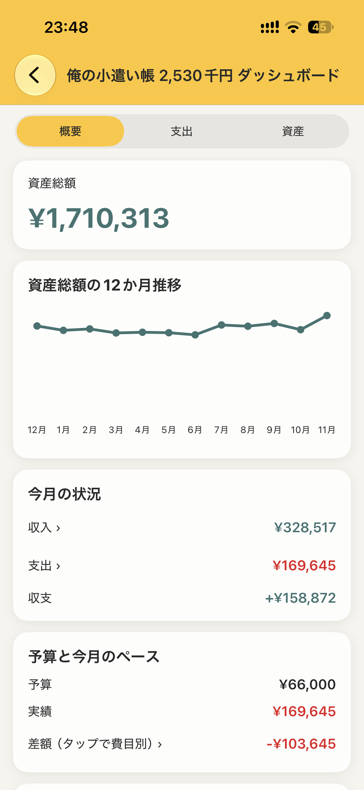
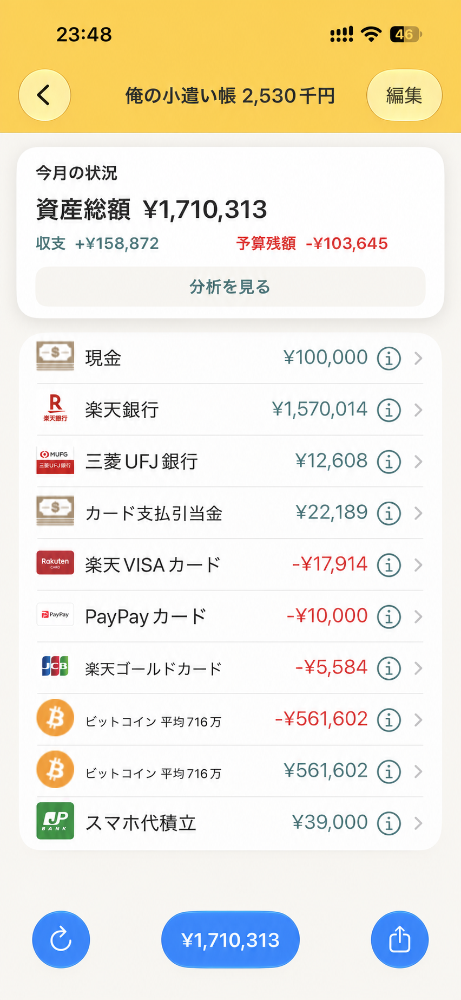
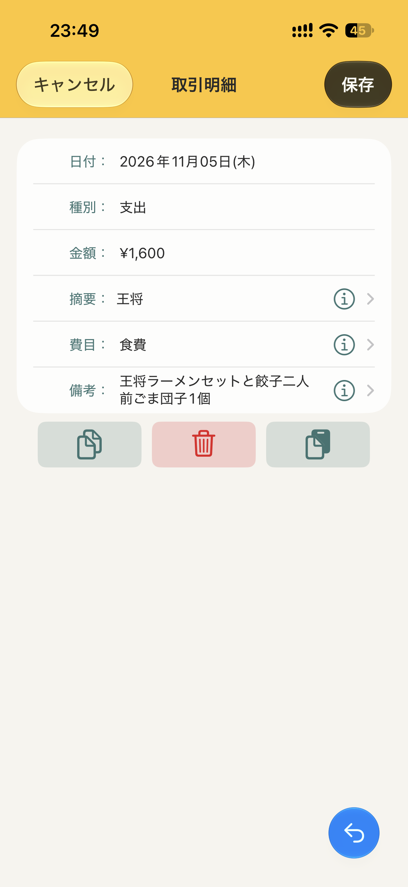
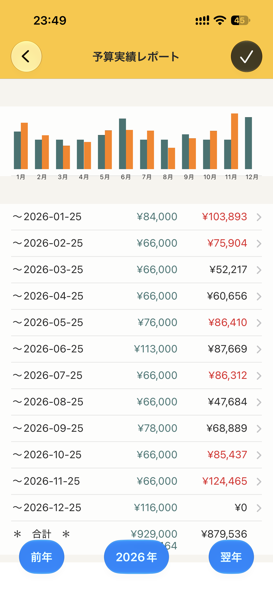
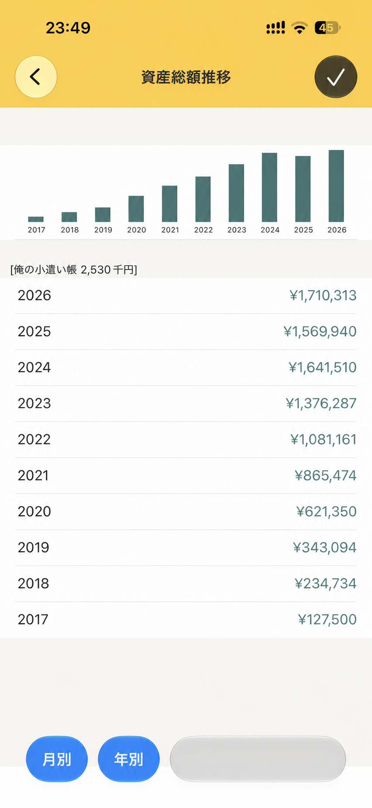
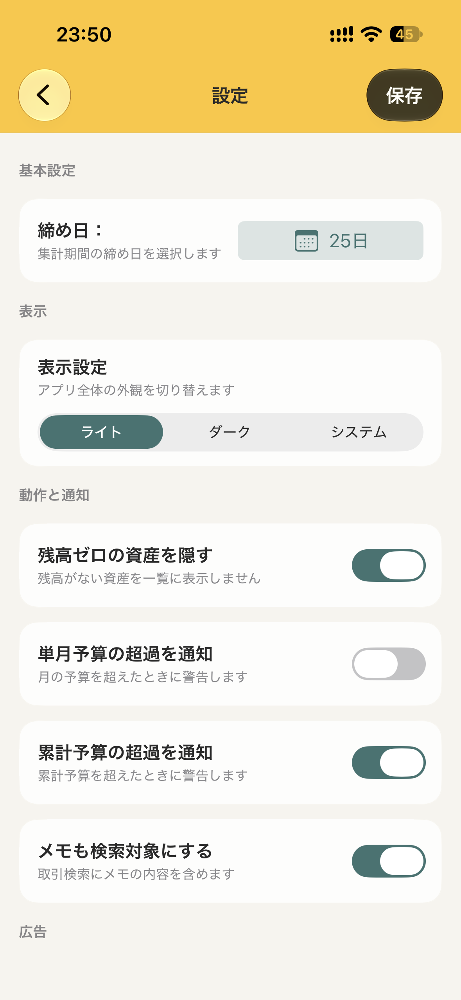
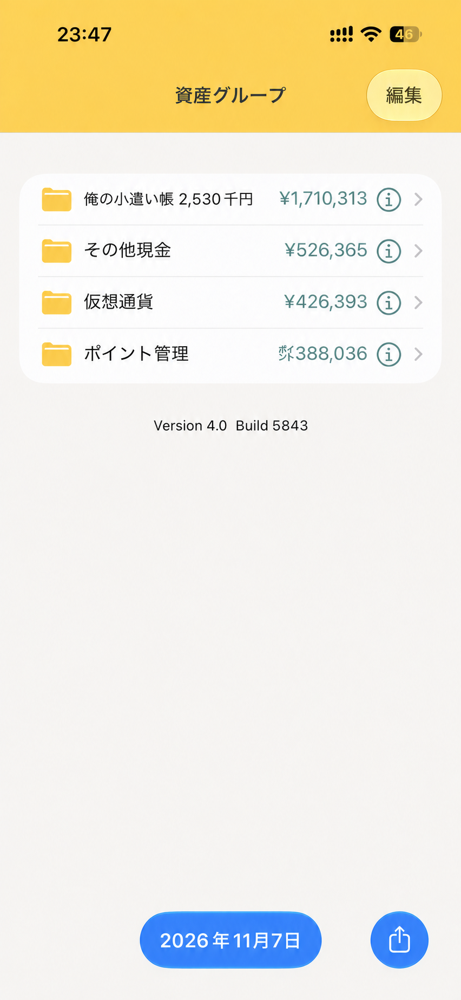
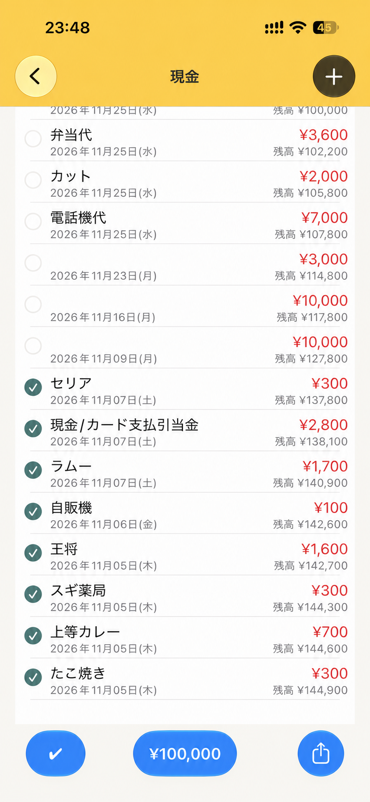
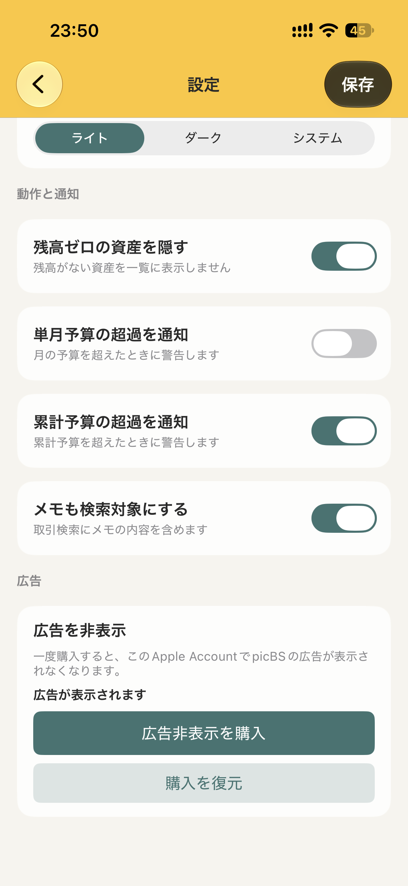

iPhone app
俺の
小遣い帳
資産、日々の収支、予算を
ひとつにまとめて見渡せる。

Everything at a glance
お金の流れを、
自分のペースで。
現金、銀行口座、カード、電子マネーなどを資産グループごとに整理。日々の記録から、今月の収支、予算残額、資産総額まで確認できます。

01資産を、
資産を、
ひとつの画面に。
現金、銀行口座、カードなどをまとめて表示。資産総額と今月の収支、予算残額を、ひと目で把握できます。
02毎日の収支を、
毎日の収支を、
気軽に記録。
支出・収入・残高調整・資産振替を登録できます。決済日、金額、摘要、費目、備考まで、必要な情報を残せます。

Reports
予算と実績を、
わかりやすく。
月別・年別の収支、予算と実績の比較、資産の推移をレポートで確認。気になる数字から取引明細までたどれます。



03使い方は、
使い方は、
あなたらしく。
締め日、表示モード、残高ゼロ資産の表示、予算超過の通知などを設定できます。バックアップとCSV出力にも対応しています。
Screens
主な画面



俺の小遣い帳
暮らしのお金を、
もっと見通しよく。
App Store の配信ページを確認後、こちらにリンクを掲載します。